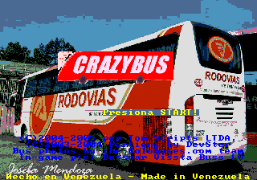
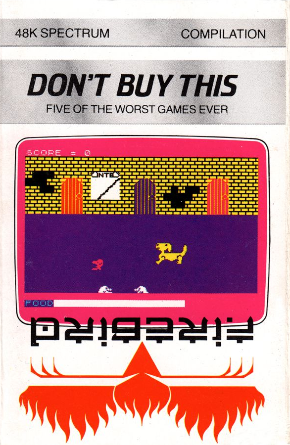

There are plenty of bad video games out there, but there are some that are bad in unusual ways:
Crazy Bus

A 2004 unlicensed "game" written in BASIC for testing purposes. It has notoriously bad randomly generated title screen music, and its gameplay consists entirely of driving a 2D bus back and forth. At least you get the option of choosing between a few different buses.
For some reason, Crazy Bus was published on the Sega Genesis by a third party without the involvement of Sega or the original creator of the game. It is important to note that the Sega Genesis was discontinued in 1997, seven years before the release of this game.
Somehow, Crazy Bus also has an IMDb page. It's rated 5.5 out of 10 stars in specifically the United Kingdom.
Don't Buy This

Released in 1985 for the ZX Spectrum, Don't Buy This is a compilation of five of the very worst video games ever submitted to its publisher, Firebird. In fact, these games were so bad that Firebird encouraged people to pirate the collection. The five games included are:
- Fido 1: You control a dog named Fido. You need to defeat moles while eating to stay alive.
- Fido 2: Similar to Fido 1, but you can now move up and down, and shoot lasers for some reason.
- Fruit Machine: From the instruction manual - "This mysterious, original new game requires skill, timing, nerve and absolute concentration. Packed with high drama, Fruit Machine should be reserved for that part of the day when time is not important (such as 4 o'clock in the morning while you are sleeping)."
The actual game consists soley of a low-res slot machine that spins at a painfully slow speed. - Race Ace: You race in a car that can only turn 90 or 180 degrees.
- Weasel Willy: You play as a "weasel" (the weasel looks more like a human) and have to avoid randomly placed trees and your own footsteps.
Surprisingly for a product literally telling you to not buy it, this collection received poor reviews.